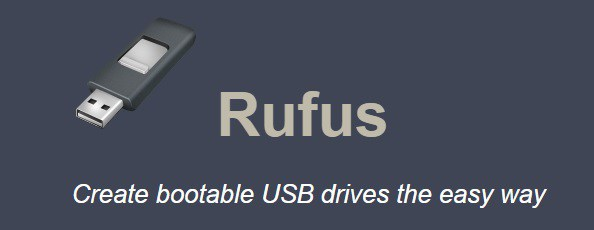

Rufus is a handy tool I used a lot during my internship. It is used to easily create bootable USB sticks. It is not only used in an industrial surrounding, it is something most computer nerds could use at home.
Rufus is an invention made by Pete Batard. He has managed to create one of the fastest “converters” on the market, and it is compatible with over 30 ISOs (optical disks). The tool basically formats the preferred USB stick and makes it ready to place the image on it, doing that same thing afterwards. It is mostly used for installing an operating system (OS).
The most positive attribute about Rufus is that it is not difficult to use: it will automatically pick the defaults, all you have to do is quickly check and make small changes here and there, name it, select the .iso file and there you go! With one click and in a few seconds, you have yourself a bootable USB. The speed of the program is a major feature.
There are not many negative things to say. It is hard to find and maybe a little too compact. It would be a lie to say that there are not a lot of these converters on the market. In spite of all these negative sides, I still think this is a very good tool to use.
I would rate this tool a solid 8.5/10, And I would recommend it to anyone who needed it.